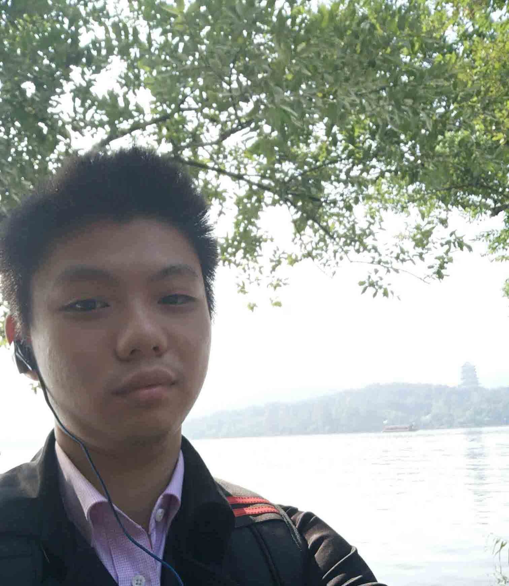

个人网页简历
联系方式
个人信息
技术优势
专长关键词
职业期望
技术熟练度
工作经历 ResumeSample
工作内容：
1 负责仓储组所有项目的客户端的PDA+工作站的基线开发与重构，确立大版本的客户端的功能与规范，分析当前行业内需求实现的技术可行性，并进行落地开发。
2 负责2021-2022 的所有PDA项目的定制开发与实现，使用基线版本为所有行业的定制项目进行定制化开发，培训团队成员，提升定制开发效率。用于解决B端的实际开发问题，并反馈完善基线开发迭代工作。
3 负责制定机器人行业PDA的软硬件标准规范，根据实际开发过程中反馈的问题进行深入思考，制定能提高研发效率的标准与规范，配合开发公司自己的软硬件产品推广行业和市场。
成果与收获：
1 使用H5和vue技术对机器人行业的PDA项目进行了从0到1的开发，使海康的机器人业务开发线的客户端设计经历了前后端分离，以及低代码平台的跨越，并作为海康机器人业务中心PDA的专家进行对外项目
的支持与文档建设。
2 作为3代基线的开发者和推广者，将基线的客户端推广到团队定制项目的开发与实现，提高了团队200%的工作效率。2年承接全行业80以上的的大型B端前端项目，对B端客户端的理解达到了专家级，并为总部的所有的技术支持提供培训。
3 作为机器人行业的开发者为行业提供标准的制定，从单纯的开发者转变为行业的支持者，会从整体行业出发，深入思考行业所需技术，并落实到部门的具体技术实现，并应用到定制项目中进行落地，在B端的客户端设计达到专家级。
工作内容：
1 负责解决AI影像云平台的版本迭代需求，处理AI结果数据，保证数据渲染的安全性和准确性，设立数据异常管理。
2 对线上版本出现的紧急问题进行修复，兼容医院出现的各种系统winxp win7等，优化因为数据加载过大出现的性能问题，优化echarts 图表渲染的数据。
3 总结当前出现的各种问题，与产品，测试，后端深入分析用户的需求，基于人机交互理论优化了前端的操作界面，提高了前端界面的流程度，优化了用户的实际使用流程，提高了客户满意度。
成果与收获：
1 学习了项目过程中较负责的封装逻辑和架构设计，不断学习尝试新的数据处理库和图形处理框架，来处理复杂的需求交互开发工作，完成了河南电力医院的云平台上线横竖屏的兼容工作的修复保证了按时上线。
2 建立了规范的开发检查机制，用eslint 处理了项目中所有的历史代码不规范的问题，对提交代码进行审核处理。解决了前期的一些历史遗留问题。合理运用了相关的工具和插件对相关的页面进行了优化
3 以客户为中心，深入分析客户的实际需求，从客户的实际环境分析，主动提出版本的更改的痛点，在与产品讨论后进行合理的项目排期，按时上线，获得了主要客户们的一致好评。
工作内容：
1.负责与项目组配合完成公司项目前端开发和维护工作；
2.根据产品需求和设计完成兼容性良好的前端页面制作，与后台工程师协作；
3.具有一定审美，完成数据交互、动态信息展示，实现数据可视化；
4.负责各前端项目的性能优化和稳定性指标并持续优化，达到用户验收标准并不断改善用户体验。
5.合理分配产品提出的需求清单，根据原型需求形成工作内容的任务功能清单，并录入bug系统用于测试和需求回归处理。
6.对客户提出的问题进行分析，及时与产品，测试和后端沟通，寻求问题的最快解决方法，缩短整体的开发时间，及时达到客户的要求。
成果与收获：
在承受较大工作压力大同时主动思考，运用科学的方法和合理的工具对任务进行了有效分类，突破了自身工作效率的上限。
在与产品的对接过程中主动分发任务，将原型图转化为可以用于测试和开发的需求文档，从而掌握了对项目分发能力，通过对
自己代码和别人代码的不断code review，学习了一些优秀的开发方法，提高了自身的效率。也提高了自己的代码开发质量。
项目经验 Experience in project
iwms仓储管理系统客户端+PDA
项目描述： iwms仓储管理系统是海康机器人业务中心复杂系统必备的系统之一，它是多个系统的上层系统，用于管理机器人的移动，库存更新相关的所有业务，也是和B端客户直接交互的一个上层系统，客户端业务操作较为复杂，涉及软硬件诸多技术细节，客户端主体使用vue框架已由我们研发团队经历过3代的技术更新 ，目前使用vue3.0搭建的低代码技术平台进行开发。
使用技术：vue Element-ui vuex lodash echarts es6 canvas svg
主要职责: 负责PDA的3代客户端的基线技术开发，根据定制项目和未来行业出现的需求，进行功能开发。保证提供的基础功能覆盖到定制项目的各方面，处理版本迭代，以及历史遗留问题。
工作成果：
1 研发基线产品为全行业120+的定制项目节约80%以上的开发效率，解决了PDA开发过程中的行业难题，为硬件部门的自研产品提供标准与支持，iwms系统获得海康的内部团队1等奖。
2 基于3代前端开发技术为海康客户端进行了重构，完善了海康的前端产品线，并与主流技术保持一致。技术重构上修正了海康的很多遗留问题。使前后端分离更规范化。
3 负责海康80+的定制的开发与上线，负责3c行业PDA的所有问题，并总结多项成果文档，供技术支持和总部进行查看，培训所有前端的团队成员以及技术支持，使能够迅速上手定制项目开发提高团队整体效率。
智慧AI影像云医疗平台-AI骨龄胶片打印
项目描述： 智慧影像云是深睿医疗基于影像ai以及机器识别算法开发的一套能智能识别患者ct影像的系统，包含肺部，脑部等部位，依托云端实现快速部署，能帮助医生智能识别患者有问题的身体以及部位。该项目应用于新冠肺炎的诊治工作 支援过武汉疫情帮助医生提高了40%以上的效率，在各大新闻媒体中能够查询到，是国家ai医疗的获奖项目之一。技术上较为复杂前端是vue 全家桶加上多框架，多技术的项目的配合，为组合式项目，包含各种最新最优的封装组合和框架库。
使用技术：vue Element-ui vuex lodash echarts es6 canvas svg
主要职责: 处理云平台的版本迭代，以及历史遗留问题。优化性能，保证数据传输的准确性和可靠性。根据用户反馈发掘用户的实际需求，迭代版本,保证数据可视化渲染的处理速度，优化处理效率
工作成果：
1 以客户为中心，深入分析客户的实际需求，从客户的实际环境分析，主动提出版本的更改的痛点，在与产品讨论后进行合理的项目排期，按时上线，获得了主要客户们的一致好评。
2 基于winxp 和 win7的特殊系统进行迭代满足了河南电力医院的横竖屏的特殊报告打印需求。并推广到主分支进行迭代，满足了竖屏打印的客户。设置配置选项兼容了更多的工作场景和医院信息
3 对代码格式和上线规范做了部分优化，使用eslint 去格式化项目，保证了项目所有代码的整体风格一致，维护了项目的后续管理，开发基于医院医生操作优化的fix2版本，对多选情况进行独立开发，提升了用户百分之20以上对处理效率。
杰思科不动产平台一窗建设项目
项目描述：杰思科不动产登记平台是基于2018年浙江省下发的“群众办事一次就好”服务文件，为实现浙江全省办事一次就好政策，而开发的国土资源（房屋，土地，海域）PC端登记系统，该系统由原先的三个系统整合而成，联通了国土资源，税务数据，房产管理3个不同政府单位的数据库。形成全新的系统。在浙江，河南全省具有80%以上的占有率，该项目采用前后端分离的架构，前端是angular后端采用springboot的微服务开发。
使用技术：：angular ng-zorro ng-alain ESlint webpack
主要职责:
1 负责宁波，舟山地区的杰思科不动产一窗的落地上线工作，定制化开发前端页面，形成符合当地特色的登记窗口平台
2 负责项目的前端整体升级从angular5升级到angular7，保证后续项目的稳定健康
工作成果：
1 在项目现场，根据公司现有的杰思科不动产登记产品，结合宁波以及舟山市国土资源局给出的意见，开发出了符合当地特色的登记系统，运用了ng-zorro组件，进行了
快速开发。在保证项目代码质量的情况下，仅用3个月时间，按期上线了登记系统，供宁波4个区的不动产登记中心使用。
2 在接手之前公司项目是angular5
由于angualr版本升级更新比较快，之前ng-zorro使用的是老版本的组件库，已经无法进行更新。在修改了大量业务代码后将项目的angular版本由5升级到了7。为后续项目使用最新版本的开源组件提供了帮助。
地理信息局大数据平台
项目描述：此项目综合性较强，在浙江的三维地图项目开发完成后，需要融合湾滩长系统和三维地图系统，将三维地图到前端显示界面融合在湾滩长系统中。
使用技术：前端采用的是angular平台的框架，主要用于数据的汇聚，清洗，融合。
主要职责: 1.负责此项目在浙江省所有的三维地图到服务器部署工作，2个系统到融合优化工作。2.现场部署，前端修改，服务器端部署。
工作成果：项目已经成功验收，项目完成情况和技术支持工作得到客户的高度认可。
所用框架个人作品


个人评价
熟悉前端的基础语言与开发工具，如HTML/H5,JS/JQ等，能运用开发动静态网页，能运用框架如angular
vue开发项目完成模块化，封装重复利用，完成公司的项目要求。
较强的项目学习能力，在实际开发过程中能通过自学，快速学习自己不懂的语言，应用搜索引擎和开源社区解决项目实际遇到的问题，达到跟上项目的进度的目的。
良好的沟通能力，在开发过程中重视团队沟通，对需要合作的项目进行相应的文档编写，防止语义不清导致的项目理解偏差，及时汇报进度保证团队了解相关的最新信息。
个人喜欢前端最新的技术的应用咨询，乐于分享自己在项目上遇到的问题解决的方法，在开源社区上如CSDN，github
均有本人的分享帖用于前端技术的探讨，参加过2018的ngchina大会，对前端未来充满热情。
个人经历
我重要的人生时间轴
-
加入海康威视，重要的人生选择帮助我用更高的行业视角去思考前端工作
2021年我6月加入海康威视，机器人业务中心工作，大公司的工作流程比小公司有一定的先进性，在工作过程中，为了能应对更多的定制项目，我们参与了研发基线的过程，使用一个基线产品能帮助多个定制的项目提升70%以上的工作效率，全新的开发模式，拓宽了我的视角，技术仅仅实现功能的一环，有时先进的管理模式，和流程开发方式更能节约时间效率。在此过程中我也不断的深入到机器人行业的发展中。并成为了PDA的有关专家。
-
认清方向，希望深入向前端发展
2018ng-china大会现场的照片，这是angular的全球大会，在学习angular的过程中，官网偶然发现的，现场真是大牛云集啊，阿里的ng-zorro前端开发组；谷歌社区的angular的成员，台湾的鸟哥，第一次参加后，让我对前端未来发展的方向有了更深的理解未来的组件化，模块化的建站也有了了解。让我也坚定了朝着前端发展的道路，希望未来我能成为一个前端兼管理的技术骨干

-
毕业，那些曾经美好的青春祝福
阳光明媚，这张是我用无人机航拍的照片，中间是我；我实现了我的大学规划，兑现了我的大学诺言，不忘初心，方得始终。很高兴我的大学没有什么遗憾，若非说有，可能就是没有去谈一场恋爱吧，太专注自己的学习，休闲时间少的可怜。但我不后悔，再见了我亲爱的同班同学，你们的学士帽还是一样的帅气，再见了我的大学，谢谢您教给我的一切，让我足与用一句话来概括：大学什么都不会教给你，唯有靠自己。谢谢您，感恩我的老师同学；让我学会了独立。

-
开始实习,孤身一人来杭州，实现自己的初心
第一次来杭州的西湖还是那么的美，这是我第一次来杭州，有别于其它人，大学的最后一个学期，没什么课。一周3节，让我能提前一学期来杭州实习，非常感激我的老师理解我，让我能提前走出校门去实习，我的第一家公司是浙江海源地理信息有限公司，职务是前端程序员，自行车铺的钱刚好够杭州租房的押金和第一个月的生活费，至次我完成了大学最开始的希望，在一个大城市中生存下去，十分感激我的上司孙总愿意教一个什么都不懂的大学生，在海源，我不仅学会了前端，还有运维，布线，服务器部署，有幸参加了浙江台州的全国湾滩长大会，作为他们的现场支持技术人员，支持三维地图的前端建设。
 -
小试牛刀开启自己的校园创业-自行车租赁
自行车租赁，是我在学校里的小小创业，我有一个合伙人是我的室友，开始的原因有很多，重要的就是我希望学习投资如何有回报，沟通能力的提升，与朋友合伙做生意要不要踩坑。我们每人投入了8000元，店里什么事情都要管理，成了半个社会人，一年半后为我们一个人收入了12000元，但是周末时间都待在了车铺，实习前夕转让了店铺，人生的第一笔投资没有打水漂真是万幸，这余下的钱，也为我来杭州打下了物质基础；非常感激这一段经历让我更好的认识了自己，也为我跨出大学的门做了最重要的准备。

-
人生中重要的时刻参加会共教育的魔鬼训练
会共教育在当时是南昌一家培养软实力的教育培训企业，机缘巧合下我自费参加了他们的暑期的魔鬼培训营，原因很简单，因为我深知自己缺少沟通，演说能力，这里能给我一段经历改变自己，成我想要的自己，在这28天的许多课程中，有我人生最重要的一段经历，生存挑战：10个人不带一分钱，3天去3个不同的城市。照片上就是我的团队，我是他们的临时队长，这里的故事可能一天都说不完，我们一起乞讨式的旅游去了九江，抚州，南昌，在这其中是无尽的辛酸，我是他们的队长，也是领导者，在这其中我并不是能力最强的，但也不是能力最差的，但是我还是平安的把他们都带回了了，秘诀就在与我自己领悟的一句话，请求比你强的人的帮助，帮助比你弱的人，因为我们是一个团队。感谢会共教育教会了我沟通，责任，担当，与爱。

-
2014年入学江西科技学院 从我的大学说起
踏入大学的门拿到大学的卡，心中难免有些激动，但现在回想起来我的大学教给我最重要的，恐怕就是大学什么都不会教给你，想要学唯有靠自己，当时的我刚进校门想了想，给自己做了一个认识规划，我是一个怎样的人，当时的我不怎么说话沟通能力欠缺，缺少人情世故，需要计算机专业知识，需要一个谋身的本领，我想要我的大学结束后能有什么样的结果？我的回答是能在一个大城市生存下去，好好的活下去，那么为此，我明白在的大学中我该做什么了。补充自己的不足，终身学习，感谢我大学的所有的老师，他们的第一堂课各不相同，但是都告诉了我大学毕业，学校给不了什么，一个专业的成绩好坏，一门课程的成绩都影响不了我的未来，唯有自己学习才是通往自己未来的钥匙。但我并不知道的是，刚入学的这枚期待的种子，在我今后的大学4年中生根发芽，成长，帮助我一步一步的完成了我的蜕变。